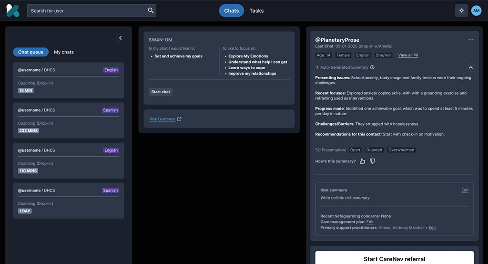

A design leadership perspective
Clarity
that scales.
A shared foundation for Artera’s next chapter.
I started with stories.
I design for understanding.
Where I started
Film & TV post-production.
Recording artist at Interscope.
Sequence. Emphasis. Emotional arc.
Knowing what someone needs to understand next.
This work is personal to me, too.
Where I apply it
Kooth / Soluna
Consumer apps and practitioner tools.
Design systems, clinical trust, medical-device application work.
Onix
Consumer and expert experiences.
One foundation across product and brand.
Designing within HIPAA and SOC 2 requirements, with privacy and protection of personal information built into the work.
More contexts.
One standard of trust.
My proposed approach, grounded in our conversations and the presentation brief.
Audit the friction.
Then choose the first win.
A visual inventory tells us what exists.
A workflow audit tells us what matters.
Reports · portal flows · Figma · code · support themes
User impact · frequency · rework · business importance
One report pattern. One real workflow. Named partners.
Keep the core.
Design for difference.
Shared foundations.
Explicit variation.
Clinical meaning preserved.
The visible experience rests on decisions that should not be reinvented for every product.
Different surfaces.
The same foundation.
At Onix, I led design across the consumer app, expert tools, sites, brand, and design system.

Visual tokens describe intent.
Clinical rules live in explicit schemas.
Make the next question
easy to answer.
What does it say?
The result and its relevant clinical context.
What does it mean?
Interpretation, applicability, and limitations.
Why should I trust it?
Supporting evidence, provenance, and definitions.
Trust lives
in the details.
Helping practitioners enter a conversation with the context they need.
- Every statement keeps its source.
- Recency is visible.
- Data boundaries are explicit.
- A clinician reviews before use.
Approved for development. Projected savings of 10–15 minutes per session, not a measured outcome.

The transferable principle: make important information easy to find and easy to verify.
Design the handoffs.
Not just the happy path.
Pathology teams operate the workflow. Ordering clinicians need the result. Both need to know what happens next.
Map the order, responsible role, permissions, and missing information with the pilot lab.
Observe real work with staff.
Standardize state, ownership, and recovery.
Configure local integration needs.
Illustrative workflow to validate with Artera and its partners. Cloud-connected analysis, not a claim of local model execution.
Same standard.
Different contexts.
Clinical context
Terminology, applicable evidence, endpoints, and locally supported claims.
Operational context
Roles, review responsibilities, integrations, and recovery paths.
Human context
Language, reading order, accessible charts, keyboard use, and non-color cues.
Validate the meaning.
A system is a product.
Give it an operating model.
When teams disagree
Make the tradeoff explicit.
- User and clinical impact
- Reuse potential and implementation cost
- A named decision owner
- A time-boxed pilot when evidence is missing
Clinical meaning and claims route through the appropriate clinical and regulatory review.
I built the system.
And the way we built it.
Governance council I established
decisionsDesign leadMikeTech leadUsability &
research leadAccessibility
lead
Established the council and ran weekly meetings with designers, researchers, and engineers.
Created a contribution model and a documentation framework.
Built the actual components, tokens, and variables in Figma.
Also participated in the accessibility working group and served on the AI ethics committee.
Earn the first team.
Then make reuse easier.
Co-build a pilot
Pair with the team on a problem they already need to solve.
Remove the friction
Design and code examples, office hours, migration support.
Show the value
Share what shipped, what improved, and what needs changing.
It is not an announcement.
Fund migration in product work.
Agree deprecation windows.
Keep contribution accessible.
Understand.
Prove. Scale.
Understand the work
Audit, observe, baseline.
Choose the pilot and its partners.
Prove a thin slice
Co-design, test, implement.
Document the first reusable patterns.
Scale what works
Measure, refine, support adoption.
Prioritize the next context.
Scope depends on engineering capacity, clinical access, partner availability, and product priorities.
Prove the value
in the work.
Delivery
Comparable change lead time
Review iterations and rework
Adoption
Eligible work using shared patterns
Active contributing teams
Experience
Comprehension and task success
Accessibility defects and support themes
Translate measured effort saved into an explicit cost estimate.
Keep assumptions visible. Include maintenance.
A shared foundation.
Clear clinical meaning.
A system teams use.
I would start with your teams,
choose a meaningful pilot,
and prove the value together.